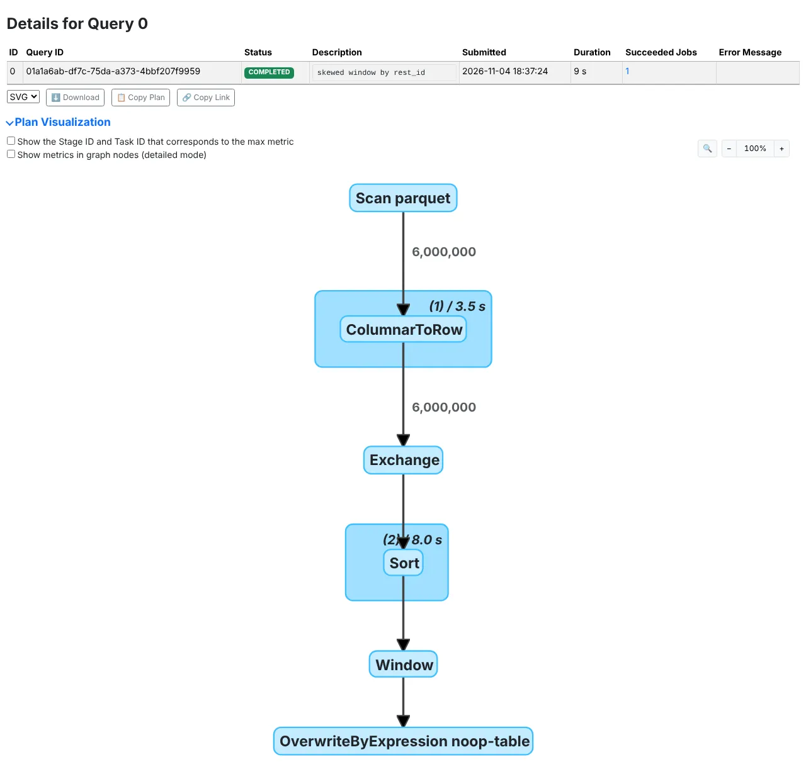
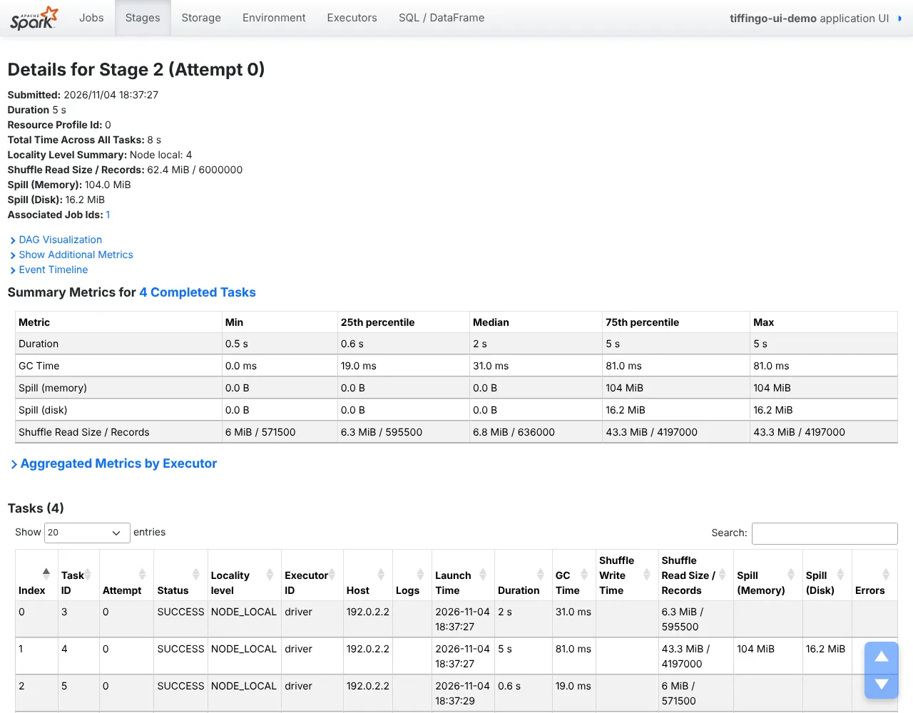
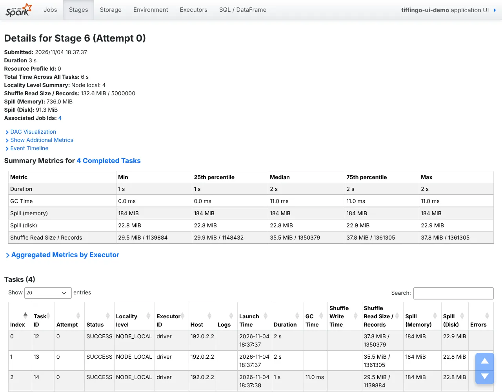

Most slow Spark jobs can be diagnosed in minutes from the Spark UI. This lesson follows one path, SQL tab → plan graph → slowest stage → task summary, on real screenshots of a skewed window and a spilling sort, and maps each metric pattern to its cause. All outputs are real (Spark 4.3.0).
Module 8 · Performance tuning⏱ 28 minIntermediate → AdvancedSpark 4.3.0Real UI screenshotsSymptom → causeRuns in your browser (Python)8 practice problems
1 The story
“The job is slow. Why?”
Before you start: jobs, stages and tasks in 1.4; this lesson uses the problems from 8.3 and 8.4.
The TiffinGo on-call channel gets the same message every week: “the job is slow today”. Some engineers restart it, some double the memory. The senior engineer opens the Spark UI and has an answer in two minutes.
Kabir
Sir, the UI has so many tabs and numbers. Where do I even start?
Arjun Sir
Always the same path: find the slowest query, then its slowest stage, then compare the slowest task with the median. The pattern of the numbers tells you the problem: skew, spill, too many tasks, a slow input, a failing executor.
Riya
Can we see it on a real job?
Arjun Sir
We will run a skewed window and a spilling sort, and read real screenshots of the SQL tab, the plan graph and two stage pages. This lesson ties together everything in Module 8. All outputs are real (Spark 4.3.0).
2 Definition
The Spark UI for troubleshooting
Formal definition (write this in exams)
The Spark web UI is served by the driver (port 4040 by default) and shows the application’s jobs, stages, tasks, storage, environment, executors and SQL executions. A job is triggered by an action, split into stages at shuffle boundaries, each made of tasks (one per partition). The stage page shows summary metrics (min, 25th percentile, median, 75th percentile, max) for duration, GC time, input, shuffle read/write and spill, and a per-task table. The SQL / DataFrame tab shows the physical plan as a graph with per-operator metrics (rows, time, sizes). After an application ends, the same pages are available in the Spark History Server from event logs. Troubleshooting means locating the slowest stage and interpreting its metric distribution.
In simple words
The Spark UI shows every job, stage and task with timings and sizes. To find why a job is slow, open the slowest query, then the slowest stage, then compare the slowest task with the typical task. The pattern tells you whether it is skew, spill, too many small tasks or something else.
Words you’ll meet in this lesson
JobWork triggered by one action.
StageTasks between shuffle boundaries.
Task summaryMin/25%/median/75%/max metrics.
Shuffle readData a task fetched from a shuffle.
SpillData written to disk (8.4).
GC timeJVM garbage-collection time.
SQL tabPlan graph with operator metrics.
History ServerUI for finished apps (event logs).
Symptom → cause
What you see
Likely cause
Lesson
Max task ≫ median, one task reads most records
Data skew
8.3
All tasks spill, durations even
Tasks too big for memory
8.4
Thousands of tasks of a few ms
Too many partitions / small files
8.1
Two big Exchanges before a join
Sort-merge where broadcast would do
8.2
High GC time (> 10%)
Memory pressure, too many objects
8.4
Failed tasks, lost executors
OOM, container kills, bad nodes
8.4 / 8.5
Long gaps with no running tasks
Driver work, waiting for executors
8.5
The Spark UI at three levels
Pick your level. New to this? Start at Beginner and climb.
Beginner A hospital chart
The doctor does not read every line. First the vital signs that are off (slowest stage), then the detailed tests for that organ (task metrics).
A fever pattern points to a cause: one hot task means skew, spill means not enough memory per task, thousands of tiny tasks mean too many partitions.
Intermediate Where things are
Driver UI on port 4040 while the app runs; the History Server (18080) for finished apps with spark.eventLog.enabled=true.
Same data via REST: /api/v1/applications/<app>/stages/<id>/<attempt>/taskSummary.
Advanced What our screenshots showed
Window stage: median task 2 s, max 5 s; one task read 4.2M of 6M records and spilled 104 MiB.
Sort stage: even tasks (1.2–1.6 s), every task spilled 184 MiB: memory, not skew.
SQL plan graph: the Sort node took 8.0 s of task time, Exchange moved 6,000,000 rows.
Exam tip: “How do you troubleshoot a slow Spark job?” Open the Spark UI (or History Server), find the longest SQL query/job, then the longest stage. In its task summary compare max vs median duration and shuffle read (skew), check spill and GC time (memory), number and size of tasks (partitioning), input size (small files, no pruning), and the plan in the SQL tab (join strategy, Exchanges). Fix the specific cause, re-run, and compare the same metrics.
3 Types and ways to use it
Which tab answers which question
Tab
Question it answers
Look at
SQL / DataFrame
Which query is slow, what plan ran?
Duration, plan graph, rows per node, Exchanges
Jobs
Which action is slow?
Duration, stages, failed stages
Stages
Where is the time inside a job?
Summary metrics, task table, event timeline
Storage
What is cached, how much?
Size in memory/disk, fraction cached
Executors
Are executors healthy?
Failed tasks, GC time, shuffle, dead executors
Environment
Which settings were used?
Spark properties actually in effect
The live UI disappears when the application ends, and its job/stage history is capped (spark.ui.retainedJobs, retainedStages). For production, enable event logs (spark.eventLog.enabled=true, spark.eventLog.dir) and run a History Server, or you will be debugging yesterday’s failure from logs alone. Use sc.setJobDescription() so jobs show readable names instead of “save at …”.
4 Step by step
Reading a real UI
All screenshots and numbers are real: Spark 4.3.0, local[2] with a 1 GB driver, AQE off, 4 shuffle partitions. Query 0: a window over restaurants where one has 60% of 6M orders (Lesson 8.3). Query 1: a sort of 5M wide rows (Lesson 8.4). The UI was kept alive and captured with a headless browser.
Step 1 · Name your jobs, find the slow query
sc = spark.sparkContext
sc.setJobDescription("skewed window by rest_id")
skewed_window.write.format("noop").mode("overwrite").save()
sc.setJobDescription("wide sort that spills")
wide_sort.write.format("noop").mode("overwrite").save()
app: tiffingo-ui-demo (local[2], driver 1g, AQE off, 4 shuffle partitions)
== SQL tab
query 0 skewed window by rest_id 9 s jobs 1
query 1 wide sort that spills 7 s jobs 3, 4
Real screenshot: the SQL / DataFrame tab. Job descriptions set with setJobDescription make the two queries easy to find.Start at the SQL / DataFrame tab: one row per query, with duration and the jobs it ran. With descriptions set, “skewed window by rest_id” (9 s) is obvious; without them you would see two rows called “save at …”.
Step 2 · Read the plan graph
SQL / DataFrame → query 0 → Plan Visualization
Scan parquet 6,000,000 rows
ColumnarToRow (1) 3.5 s
Exchange 6,000,000 rows
Sort (2) 8.0 s
Window
OverwriteByExpression noop-table

Real screenshot: the plan graph of query 0. Edges show rows (6,000,000), boxes show total task time per code-generated stage (3.5 s scan, 8.0 s sort).The graph shows the physical plan with metrics. The Exchange means a shuffle of all 6 million rows by rest_id. The blue boxes are whole-stage-codegen blocks with total task time: 8.0 s in the Sort block (stage 2) vs 3.5 s for scanning. So the time is after the shuffle. Next: that stage.
Step 3 · The skewed stage
Stages → stage 2 → Summary Metrics
== Stage 2 (window, shuffle read 62.4 MiB / 6000000 records)
Duration min 0.5 s median 2 s max 5 s
Shuffle read recs min 571500 median 636000 max 4197000
Spill (memory) max 104 MiB (one task) Spill (disk) 16.2 MiB

Real screenshot: the window stage. Median 2 s, max 5 s; the max task read 4,197,000 of 6,000,000 records and was the only one to spill (104 MiB). Skew.Read the summary table across: duration min 0.5 s, median 2 s, max 5 s; shuffle read median 636,000 records, max 4,197,000. One task got 70% of the data, and only that task spilled (104 MiB). This is the skew signature: fix with the techniques from Lesson 8.3, not with more memory.
Step 4 · The spilling stage
Stages → stage 6 → Summary Metrics
== Stage 6 (sort, 4 tasks)
Duration min 1.2 s median 1.6 s max 1.6 s
Shuffle read recs min 1139884 max 1361305
Spill (memory) 184 MiB per task Spill (disk) ~23 MiB per task

Real screenshot: the sort stage. Durations are even (1.2–1.6 s) but every task spilled ~184 MiB. Not skew: tasks too big for 1 GB of memory.A different pattern: durations and records are even across the 4 tasks (1.2–1.6 s, 1.14M–1.36M records), but every task spilled about 184 MiB. No skew; each task is simply too big for the 1 GB heap. The fix from Lesson 8.4: more partitions (64 removed all spill) or more memory per task.
+ Going deeper
Habits that keep the UI clean
Kai UI problems code ki chhoti aadaton se aate hain. Lab ke real numbers:
# plan size and timing
== 2) 20 x withColumn vs one select (analysed plan size, time to build the DataFrame)
withColumn x20 : 21 Project nodes, built in 220 ms
one select : 2 Project nodes, built in 70 ms
withColumns : 2 Project nodes
== 3) renaming many columns
chained withColumnRenamed: 4 Project nodes
orders.toDF(*cols) : 2 Project nodes -> ['CITY', 'ITEM', 'QTY']
== 4) 'is there any bad order?' count() > 0 vs isEmpty()
count() > 0 : True 0.31 s (scans everything)
isEmpty() : True 0.12 s (stops at the first row)
Left: real UI metrics. Right: what each pattern means.
Reading the numbers 4 steps
What you see
SQL tab.
Plan graph.
Skewed stage.
Spilling stage.
Behind the screen
The troubleshooting path.
Operator time.
Skew signature.
Memory signature.
Three live scenarios follow: a skewed join, thousands of tiny tasks, and a failure found in the History Server.
Real-time scenario 1
The two-hour join
Finding skew in the UI. (Typical; pattern from our screenshots.)
Skew in the UI 5 steps
Animated example
Slow.
Skew.
Key.
Fix.
Verify.
Real-time scenario 2
Twenty thousand tiny tasks
Too many tasks in the UI. (Typical.)
Too many tasks 5 steps
Animated example
Tasks.
Files.
Compact.
Faster.
Prevent.
Real-time scenario 3 · advanced
Debugging last night’s failure
History Server and executor failures. (Typical.)
History Server 5 steps
Animated example
Failed.
History.
Executors.
Fix.
Logs on.
6 Real-world use
The Spark UI at work
1. On-call runbooks
Runbooks list the UI path: SQL tab → slowest stage → task summary → symptom table.
Alert→UI path→Cause
2. Post-mortems
Event logs kept for 30 days let teams compare a bad run with a good one.
Event logs→History Server→Diff runs
3. Automated checks
Jobs read their own stage metrics via the REST API and alert on skew or spill.
REST API→max/median→Alert
4. Code reviews
New pipelines attach a screenshot of the SQL plan graph showing the expected joins.
New job→plan graph→Approved
5. Cost tuning
Teams find the stages with the most task time and fix those first.
Task time→top stages→Savings
Examples are simplified.
7 Run the code
Run the code: diagnosing a stage
Rules of thumb that turn task-summary numbers into a cause. Press Run, then try the challenges.
# Diagnose a stage from its task summary (simplified rules)
stage = {"tasks": 4, "dur_med": 2.0, "dur_max": 5.0,
"rec_med": 636000, "rec_max": 4197000,
"spill_tasks": 1, "gc_pct": 2}
def diagnose(s):
found = []
if s["dur_max"] > 2 * s["dur_med"] and s["rec_max"] > 3 * s["rec_med"]:
found.append("skew: one task holds most records (8.3)")
if s["spill_tasks"] == s["tasks"]:
found.append("every task spills: tasks too big (8.4)")
if s["tasks"] > 5000 and s["dur_med"] < 0.1:
found.append("too many tiny tasks (8.1)")
if s["gc_pct"] > 10:
found.append("high GC: memory pressure (8.4)")
return found or ["looks healthy"]
print(diagnose(stage))
['skew: one task holds most records (8.3)']
if s["dur_max"] > 2 * s["dur_med"] and s["rec_max"] > 3 * s["rec_med"]:Skew: the slowest task also read far more data than the median task.
if s["spill_tasks"] == s["tasks"]:Spill in every task (not just one) points to task size or memory, not skew.
Run on your PC: the UI and its API
While a pyspark shell is open. Outputs are real (Spark 4.3.0).
# History Server on :18080 lists the finished application
See Lesson 1.5 cluster.
8 Line by line
Percentiles from task durations
How the summary table is computed from task durations.
Worked examples: real problems, solved and traced in memory
Three diagnoses from UI numbers.
Example 1BeginnerUI · basics
Which stage first?
Problem statement
A job has 5 stages taking 10, 12, 340, 8 and 15 s.
Input
stage durations
Expected output
stage 2 takes 88 % of the job
Approach
Sort by duration.
Start with the largest.
Ignore the rest for now.
Solution: run it live
What happens in memory, step by step
Recorded from a real Python run: press Next to execute one line at a time. Watch variables change in each frame, and lists and dictionaries (numbered #1, #2 …) fill up as objects.
Example 2IntermediateUI · patterns
Skew or spill?
Problem statement
Max task 9 min, median 8 min, every task spills 3 GB.
Input
summary metrics
Expected output
spill / task size
Approach
max ≈ median → no skew.
Spill everywhere → task size.
More partitions.
Solution: run it live
What happens in memory, step by step
Recorded from a real Python run: press Next to execute one line at a time. Watch variables change in each frame, and lists and dictionaries (numbered #1, #2 …) fill up as objects.
Example 3AdvancedUI · plan
Read the plan graph
Problem statement
A join query shows two Exchanges of 2 billion and 40 thousand rows.
Input
SQL tab
Expected output
broadcast candidate
Approach
The small side was shuffled too.
A broadcast would remove both Exchanges of the big side.
Check threshold/hint.
Solution: run it live
What happens in memory, step by step
Recorded from a real Python run: press Next to execute one line at a time. Watch variables change in each frame, and lists and dictionaries (numbered #1, #2 …) fill up as objects.
Flag stages with median < 100 ms and > 5,000 tasks.
Input
stages
Expected output
[(20000, 15)]
Show solution and explanation
stages = [(20000, 15), (200, 2000)]
print([s for s in stages if s[0] > 5000 and s[1] < 100])
[(20000, 15)]
How it works: Small files or too many partitions.
P6Medium
GC share
GC time as % of task time.
Input
81 ms of 5 s
Expected output
1.6 %
Show solution and explanation
print(round(81 / 5000 * 100, 1), "%")
1.6 %
How it works: Low: not a GC problem.
P7Business problem
Time to diagnose
Hours saved per year with a UI runbook.
Input
1 incident/week, 2 h → 15 min
Expected output
91 hours
Show solution and explanation
print(round(52 * (2 - 0.25)), "hours")
91 hours
How it works: Runbooks pay off.
P8Business problem
Wasted reruns
Cluster hours wasted by blind restarts.
Input
3 reruns × 2 h × 20 executors
Expected output
120 executor-hours
Show solution and explanation
print(3 * 2 * 20, "executor-hours")
120 executor-hours
How it works: Diagnose first.
Real-world scenario questions (asked in company interviews)
Interviewers love “walk me through debugging a slow job”.
Any company · SparkFresher
“What is in the Spark UI?”
Name the main tabs.
The interviewer is checking: what each shows?
Show a strong answer
Jobs (per action), Stages (tasks and summary metrics), Storage (cached data), Environment (settings), Executors (health, GC, shuffle), and SQL / DataFrame (queries with plan graphs and operator metrics).
Avoid: Only mentioning the Jobs tab.
Data engineeringMid-level
Slow job walkthrough
A daily job doubled in duration.
The interviewer is checking: your steps?
Show a strong answer
Compare today’s and yesterday’s runs in the History Server.
Find the stage that grew; read its task summary.
Match the pattern: skew, spill, input size, more tasks; fix that.
Avoid: Restarting with more memory.
Data engineeringMid-level
Skew vs spill
How do you tell skew from memory problems in the UI?
The interviewer is checking: metrics?
Show a strong answer
Skew: max ≫ median duration and shuffle read; spill in few tasks.
Memory: even tasks, spill or high GC in all tasks.
In my screenshots: 4.2M vs 636K records vs 184 MiB spill in every task.
Avoid: Treating all spill as skew.
PlatformSenior
Observability
Make Spark jobs debuggable across 500 pipelines.
The interviewer is checking: setup?
Show a strong answer
Event logs to object storage + History Server with retention.
Job descriptions and app names by convention.
REST-based metrics (skew ratio, spill, GC) into dashboards and alerts.